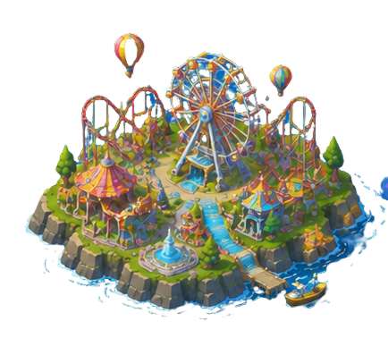

张长瑞
系统架构 / 交互设计 / 跨界落地
在交大的这几年，我逐渐形成了“系统架构、交互设计与跨界落地”三位一体的工作方式。我天生对复杂系统有种拆解欲，也不满足于停留在“画界面”的悬浮概念上。
从儿童智能硬件背后长效的游戏化行为回路，到极地房车一体化 HMI，再到用 Android Studio 完成从 UX 到原生开发的独立落地，我始终在追求一种更自然的体验秩序。
Design / Product / Interaction / AI
在用户、系统与产品之间，寻找更清晰的体验秩序。
手机端展示核心内容，完整功能请使用 PC 端访问。
系统架构 / 交互设计 / 跨界落地
在交大的这几年，我逐渐形成了“系统架构、交互设计与跨界落地”三位一体的工作方式。我天生对复杂系统有种拆解欲，也不满足于停留在“画界面”的悬浮概念上。
从儿童智能硬件背后长效的游戏化行为回路，到极地房车一体化 HMI，再到用 Android Studio 完成从 UX 到原生开发的独立落地，我始终在追求一种更自然的体验秩序。
上海交通大学 · 设计学院
工业设计专业 · 本科 · 2023.09 - 2027.06

 儿童智能饮水
儿童智能饮水童趣硬件、亲子陪伴、饮水习惯养成。
 极地房车 HMI
极地房车 HMI低变化环境下的移动居住系统。
 ASTORY
ASTORY叙事经营、债务生存和轮回成长。
 AI 智能家居
AI 智能家居家庭 Agent、场景编排与解释型交互。
 UI/UX 交互演示
UI/UX 交互演示宽屏原型、热点交互和横屏体验。

其他项目视觉、产品、装置和课程项目合集。
 更多实验
更多实验概念实验、原型练习、灵感草稿。
面对 HMI、AI Agent、儿童硬件或空间服务时，先找清楚角色、场景、约束与信息流。
把真实行为转译成可操作路径：什么时候提醒，哪里给反馈，怎样降低理解成本。
用 Figma、HTML、Android Studio、Blender 等工具把关键交互做出来。
把产品、空间、AI、HMI 和技术实现组织成可被使用的体验。
PORTFOLIO 2025 / ENDING
设计不是把问题画漂亮，— 张长瑞
而是让复杂系统变得可以被理解、被使用、被感知。